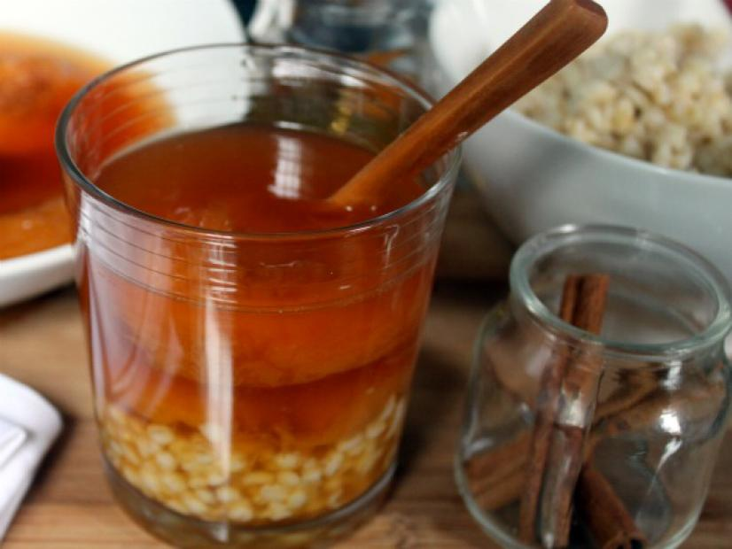

Mote with huesillo

Ingredients
- 1/4 kg of dried peach halves
- 1/4 cup of sugar
- Whole cinnamon stick
- Lemon or orange peel
- 1 lt. of water
- 1 cup pearled barley or wheat berries, cooked
Instructions
- Combine dried peaches and water and soak overnight in refrigerator to rehydrate.
- In a large heavy pot, pour sugar and cook over medium heat, moving pan frequently but not stirring
until the sugar melts and takes on a light amber hue.
- Off heat, careful to avoid any steam or sputtering, add one cup of the soaking water from the peaches.
Stir over medium heat until the caramel has dissolved. Add the remaining soaking water, peaches, cinnamon stick and lemon (or orange) peel.
- Return to a simmer and cook until tender, about 30 minutes.
- Cool to room temperature then chill until cold. Add 2 to 3 tablespoons of cooked barley or wheat berries to the bottom of a tall glass.
And ready to serve!